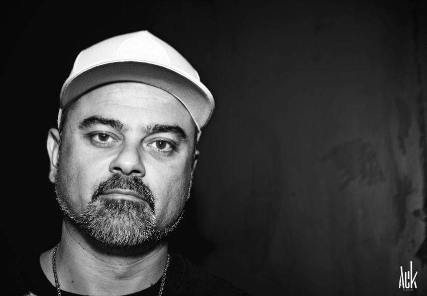

Nombre: Ignacio Fornés Olmo A.K.A: Nach.

Nach nació en Albacete en 1974.1 Ignacio Fornés se crio en Alicante, en el barrio de San Blas, donde conoció a su mánager y mejor amigo Francisco Cañas (al que alude en redes sociales como "mi hermano de otra madre"), creció como rapero, y desarrolló su etapa educativa, primero en el I.E.S. Jorge Juan y más tarde en la Universidad de Alicante, donde se licenció en sociología. Algunos temas suyos hacen alusión a su identificación como alicantino: Repaso de mis pasos (pista 3 del álbum Ars Magna) y"Anochece (pista 16 del álbum Un Día En Suburbia). En sus inicios fue conocido como «Nach Scratch» pero decidió simplificar su nombre artístico a Nach al constatar los errores que la prensa, los organizadores de conciertos y su propio público cometían al escribir la palabra «Scratch».